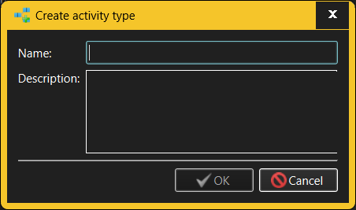

The same dialog is used for both creating new Activity Types and modifying existing Activity Types.

The fields in the Create/Modify Activity Type dialog allow the user to specify:
Only someone with Administrator or Manage Activity Types capabilities is allowed to create or modify Activity Types. However, anyone who can log into a given workspace can see all Activity Types defined there.
See also: -